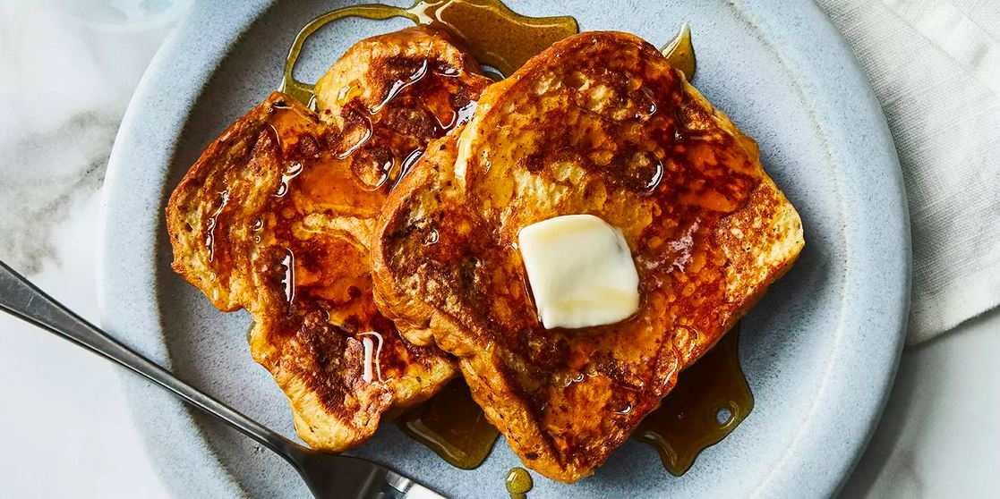

Odin Recipes
French Toast

Description:
French toast will always be a staple for leisurely weekend breakfasts along with my favourite fluffy Pancakes and Pancakes bursting with Blueberries. So skip the bistro queue and make brunch at home this weekend!
Ingredients:
- 6 slices of bread
- 2-3 tbsp butter
- 2 large eggs
- 1/2 cup milk
- 1/2 tsp cinnamon powder
- 1 tsp vanilla extract
- Strawberries sliced
- Maple syrup
Steps:
- Whisk eggs, milk, cinnamon powder, and vanilla extract in a bowl
- Melt butter in non-stick pan
- Place bread briefly in bread mixture, coating both sides
- Cook on pan for 2-3 minutes each side or until golden
- Server with butter and maple syrup